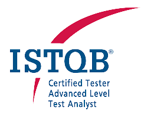

International Software Testing Qualifications Board
Copyright Notice © International Software Testing Qualifications Board (hereinafter called ISTQB®). ISTQB® is a registered trademark of the International Software Testing Qualifications Board.
Copyright © 2019 the authors for the update 2018 V3.1 Klaus Olsen (chair), Meile Posthuma and Stephanie Ulrich.
Copyright © 2018 the authors for the update 2018 Klaus Olsen (chair), Tauhida Parveen (vice chair), Rex Black (project manager), Debra Friedenberg, Matthias Hamburg, Judy McKay, Meile Posthuma, Hans Schaefer, Radoslaw Smilgin, Mike Smith, Steve Toms, Stephanie Ulrich, Marie Walsh, and Eshraka Zakaria.
Copyright © 2011 the authors for the update 2011 Thomas Müller (chair), Debra Friedenberg, and the ISTQB® WG Foundation Level.
Copyright © 2010 the authors for the update 2010 Thomas Müller (chair), Armin Beer, Martin Klonk, and Rahul Verma.
Copyright © 2007 the authors for the update 2007 Thomas Müller (chair), Dorothy Graham, Debra Friedenberg and Erik van Veenendaal.
Copyright © 2005, the authors Thomas Müller (chair), Rex Black, Sigrid Eldh, Dorothy Graham, Klaus Olsen, Maaret Pyhäjärvi, Geoff Thompson, and Erik van Veenendaal.
All rights reserved. The authors hereby transfer the copyright to the ISTQB®. The authors (as current copyright holders) and ISTQB® (as the future copyright holder) have agreed to the following conditions of use:
Extracts, for non-commercial use, from this document may be copied if the source is acknowledged.Any Accredited Training Provider may use this syllabus as the basis for a training course if the authors and the ISTQB® are acknowledged as the source and copyright owners of the syllabus and provided that any advertisement of such a training course may mention the syllabus only after official Accreditation of the training materials has been received from an ISTQB®-recognized Member Board.
Any individual or group of individuals may use this syllabus as the basis for articles and books, if the authors and the ISTQB® are acknowledged as the source and copyright owners of the syllabus.
Any other use of this syllabus is prohibited without first obtaining the approval in writing of the ISTQB®.
Any ISTQB®-recognized Member Board may translate this syllabus provided they reproduce the abovementioned Copyright Notice in the translated version of the syllabus.
| Version | Date | Remarks |
|---|---|---|
| ISTQB® 2018 v3.1.1 | 1-July-2021 | Copyright and Logo Update |
| ISTQB® 2018 v3.1 | 11-November- 2019 | Certified Tester Foundation Level Syllabus Maintenance Release with minor updates – see Release Notes |
| ISTQB® 2018 | 27-April-2018 | Candidate general release version |
| ISTQB® 2011 | 1-Apr-2011 | Certified Tester Foundation Level Syllabus Maintenance Release – see Release Notes |
| ISTQB® 2010 | ISTQB® 2010 | Certified Tester Foundation Level Syllabus Maintenance Release – see Release Notes |
| ISTQB® 2007 | 01-May-2007 | Certified Tester Foundation Level Syllabus Maintenance Release |
| ISTQB® 2005 | 01-July-2005 | Certified Tester Foundation Level Syllabus |
| ASQF V2.2 | July-2003 | ASQF Syllabus Foundation Level Version 2.2 “Lehrplan Grundlagen des Software-testens“ |
| ISEB V2.0 | ISEB V2.0 | ISEB Software Testing Foundation Syllabus V2.0 |
Copyright Notice
Revision History
Table of Contents
Acknowledgements